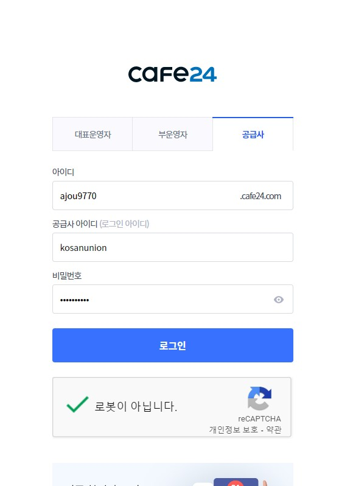
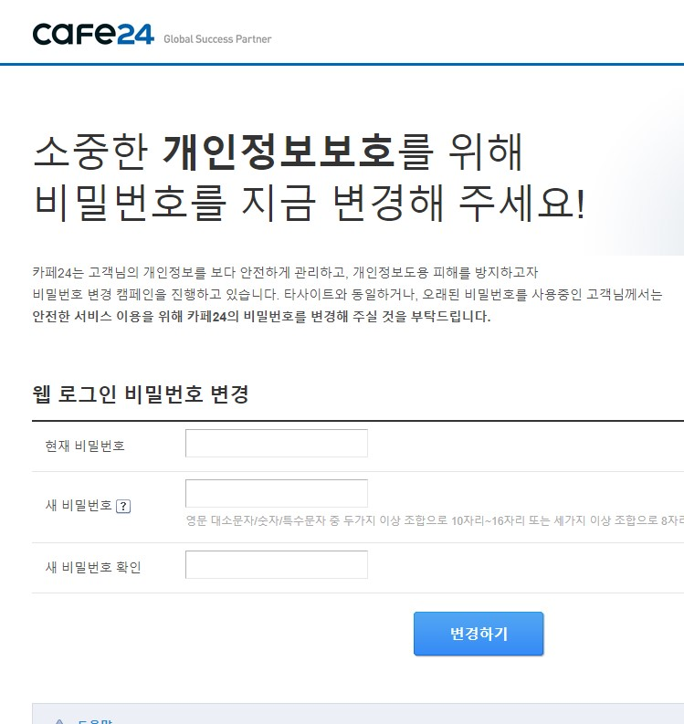
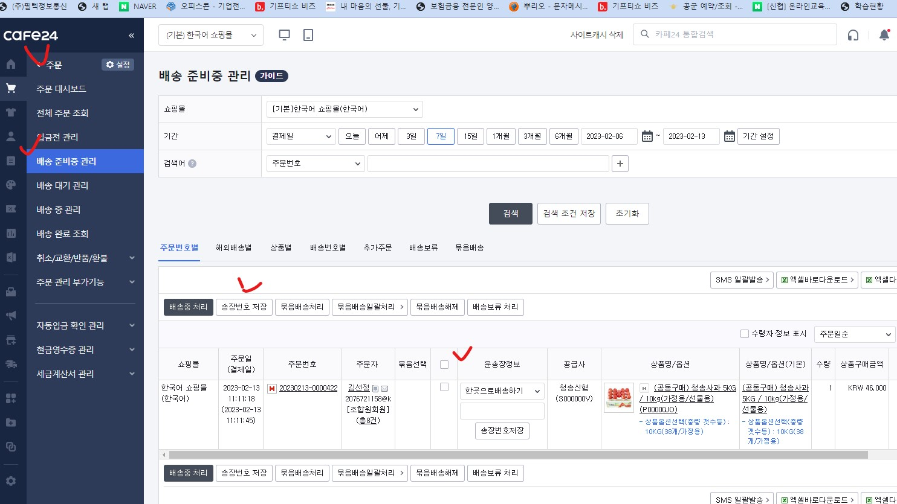

신협 특판몰 택배 배송등록 방법 메뉴얼!!
☞ 아래 메뉴얼에 따라, 택배사 및 송장번호 등록 바랍니다.
📢 주문 > 배송준비중 관리 > 택배사선택 및 송장번호 입력 후 => 송장번호 저장까지만(배송중 처리 안됩니다.)
그 후 배송중처리는 신협에서 송장번호 체크 후 처리 합니다.
# http://ajoucu.com/admin 에서 공급사 로그인

# 공급사 로그인 비번 변경

# 주문 > 배송준비중관리 > 택배사 선택 및 송장번호 입력후, 송장번호 저장

☞ 송장번호 저장까지만 진행해 주세요, 그 후 배송중처리는 조합에서 확인 후 처리 합니다. .
※ 배송중 처리시 구매 조합원에게 배송알림톡 자동 전송됩니다.
☞ 천혜향, 청송사과 등 복수(다중) 주문시에는 송장정보를 입력하지 마세요.
신협홈으로 가기